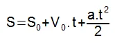
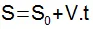

Lançamento Horizontal
Vetor X tem Movimento Retilíneo Uniforme(velocidade constante)
Vetor Y tem Movimento Retilíneo Uniforme Variável(velocidade variável)
Vetor X tem Movimento Retilíneo Uniforme(velocidade constante)
Vetor Y tem Movimento Retilíneo Uniforme Variável(velocidade variável)
Com o movimento na horizontal, pode-se aplicar a função horária da posição para o movimento retilíneo uniforme e determinar o alcance de um objeto lançado horizontalmente, conforme a seguinte fórmula:
Com o movimento na horizontal, pode-se aplicar a função horária da posição para o movimento retilíneo uniforme e determinar o alcance de um objeto lançado horizontalmente, conforme a seguinte fórmula
